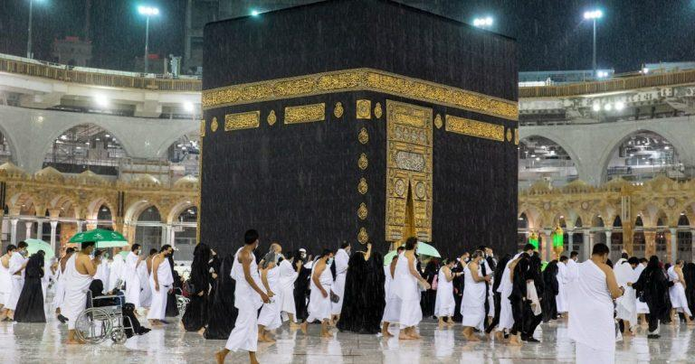

Best Tips For Travel Prayer Islam
When traveling, it is essential to have a prayer request in mind. Many people are religious and believe in the power of prayer. Prayer can help you find calm and relief when faced with difficult circumstances and be a source of strength during times of stress. When your airline or travel agent asks you to pray, include the keywords “travel prayer.” Prayers can be done in public or private areas, and it is essential to be polite to those who attend prayer services.
Introduction: What is travel prayer Islam?
Once upon a time, there was a woman who loved to travel. She would go to different countries and explore their cultures. One day she came across a mosque and decided to visit. Inside she found a group of people praying. She was curious and decided to join in. She felt a sense of peace and tranquility while praying. The woman realized this was a travel prayer and decided to do it whenever she traveled. She found that it helped her to feel at home in new places and to enjoy the cultures more. She hopes that others will find the same peace and solace in travel prayer and help them connect with their faith in new and exciting ways.
What do people do when they travel for prayer?
When the Prophet Muhammad prayed, he often traveled for prayer. He would leave his home in Mecca and head to a nearby location where he could pray in privacy. Traveling for prayer is encouraged in Islam and is a way to connect with Allah. Muslims believe that by traveling to different locations, they can get a better understanding of God’s creations. In addition, Muslims believe they can connect more intimately with Allah by praying in other places.
What are some of the benefits of travel prayer Islam?
Muslims recite the Qur’an as one of the Five Pillars of Islam. Muslims believe that Allah sent the Qur’an as guidance for all of humanity. Muslims also believe that Allah wants Muslims to travel to Mecca, the birthplace of Muhammad, to perform the Hajj pilgrimage. Therefore, the Hajj is one of the 5 pillars of Islam.
- There are many benefits to traveling to Mecca. The first benefit is that Muslims can learn more about their religion. When Muslims travel to Mecca, they can see the sites where Muhammad lived, preached, and was buried. Muslims can also learn about the Hajj pilgrimage and its rituals.
- Another benefit to traveling to Mecca is that Muslims can increase their spiritual strength. When Muslims travel to Mecca, they can pray at the Kaaba, the holiest site in Islam. Muslims can also visit the graves of Muhammad and other prophets. This pilgrimage can help Muslims connect more deeply with their faith.
- Finally, traveling to Mecca can help Muslims connect with other Muslims. When Muslims travel to Mecca, they can meet other Muslims worldwide. This interaction can help Muslims learn more about Islam and build stronger relationships with their fellow Muslims.
What are some tips for traveling with prayer?
Prayer is an essential part of traveling. Not only does it help you stay connected with God, but it can also provide you with a sense of calm and peace. Here are a few tips for Travel Prayer Islam:
- Keep a prayer journal. The best way to keep your prayers organized and focused while on your trip is to keep a prayer journal. This way, you can track your progress and reflect on your experiences.
- Pray before you go. Before you go anywhere, spend some time in prayer. It will help you focus and connect while you’re on your trip.
- Keep a Bible with you. Not only is it a great source of comfort and inspiration, but a Bible can also help you stay connected to God while you’re on your trip.
- Dedicate time to prayer each day. Whether you pray for 30 minutes before you go to bed or take a few minutes during your lunch break, make time each day to connect with God.
- Pray for your fellow travelers. Whether you’re traveling with family or friends, pray for them. Praying for others can help to ease their travel worries and enrich their experience.
What to expect during travel prayer Islam.
Travel Prayer Islam, it is essential to be aware of the religious symbols found throughout the Muslim world. One of these symbols is prayer. To get a deeper meaning of what to expect during worship, it is helpful to understand some of the basics.
Prayer is said five times a day and typically lasts around 30 minutes. Therefore, passengers must be familiar with how the prayer should be conducted to enjoy its benefits. First, the person must sit down in a comfortable position and close their eyes. Then, they are asked to recite certain words from the Koran (the religious text shared by both Muslims and non-Muslims). After repeating these words, they can speak or write out loud in front of them for guidance.
Tips for making travel prayer more effective.
1. Many Muslims believe that prayer can be more effective when done regularly, in an area where Muslim prayers are offered, and with someone familiar with the local language.
2. There are a few things you can do to increase your prayer effectiveness:
- Make sure you know the local Islamic terms for Allah (God), Muhammad (peace be upon him), and Mecca (the city of Mecca). This will help you understand what prayers are meant to be said.
- Pray in a central place where people gather for prayer and offer tawassul (thankful ablution) before each Muslim prayer. This will help participants feel connected to one another and more likely to receive blessings from Allah during their prayers.
The role of prayer in life and how it can benefit us all.
A recent article in Religion News Service explored the role of prayer in Muslim life and found that it can have a powerful impact on individual and community life. Prayer can be seen as an essential part of Islamic tradition, which stresses humility and service to others. In addition, prayer can help people find their way in life and connect with God.
The article found that prayer can be used to reflect on personal problems, boost morale, and promote social justice. It also found that prayer can open up new perspectives on the world, provide healing for suffering, and help people connect. Praying can be a powerful way to connect with God and promote religious values in one’s own life.
Conclusion:
The purpose of travel prayer in Islam is to connect with Allah, the Highest, while on a journey. By doing so, Muslims can ask for guidance, assistance, and protection while traveling. Additionally, prayer can help Muslims connect with fellow Muslims while traveling and feel more connected to Allah during their trip.
| Prayer | Iqamah |
|---|---|
| Fajr | 5:50 am |
| Zuhr | 1:15 pm |
| Asr | 3:15 pm |
| Maghrib | 4:33 pm |
| Isha | 7:15 pm |
| Jummah 1st Khutbah | 1:05 pm |
| Jummah 2nd Khutbah | 1:40 pm |